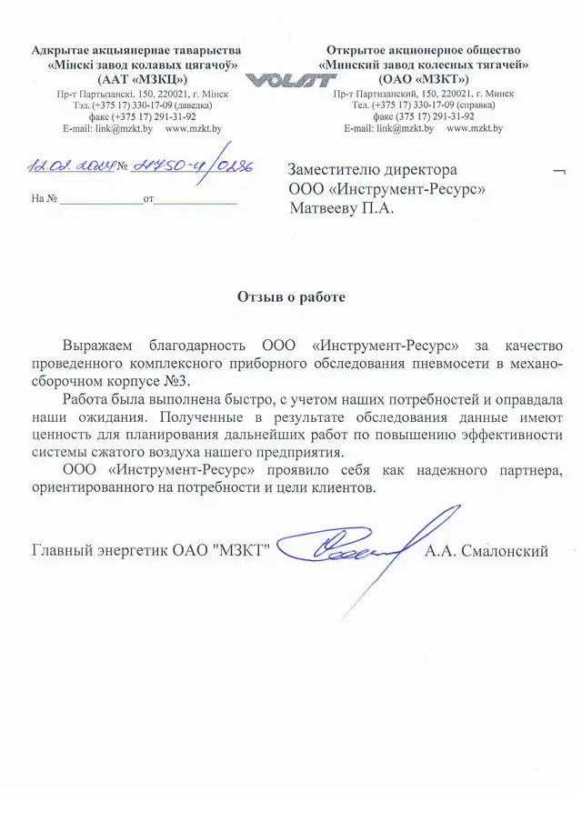

07.08.2025
ООО «Йоран»
Особая благодарность за решение острой необходимости в сжатом с воздухе, предоставлением компрессора в аренду из наличия!
Рекомендуем ООО «Инструмент-Ресурс», как надёжного поставщика в сфере подбора и поставок оборудования для сжатого воздуха
Рекомендуем ООО «Инструмент-Ресурс», как надёжного поставщика в сфере подбора и поставок оборудования для сжатого воздуха
{kind=link}
30.06.2025
ООО «Азбука снеков»
Отмечаем высокую квалификацию и клиентоориентированность ваших сотрудников: заявки на сервис обрабатываются оперативно, рекомендации помогают поддерживать оборудование в оптимальном состоянии, а предоставляемая консультационная поддержка делает взаимодействие максимально прозрачным.
Учитывая положительный опыт сотрудничества, рекомендуем ООО «Инструмент-Ресурс» как надёжного партнёра в области поставки и обслуживания компрессорного оборудования и желаем вашей компании дальнейшего развития и успехов.
Учитывая положительный опыт сотрудничества, рекомендуем ООО «Инструмент-Ресурс» как надёжного партнёра в области поставки и обслуживания компрессорного оборудования и желаем вашей компании дальнейшего развития и успехов.
{kind=link}
18.06.2025
ООО «Каштан»
Поставки оборудования выполнены качественно и в установленные договором сроки, что свидетельствует о надёжности компании ООО «Инструмент-Ресурс», как делового партнёра.
Мы рады отметить высокий профессиональный уровень сотрудников, их умение находить оптимальные решения в любых рабочих ситуациях.
ООО «Каштан» высоко ценит и рекомендует сотрудничество с компанией ООО «Инструмент-Ресурс».
Мы рады отметить высокий профессиональный уровень сотрудников, их умение находить оптимальные решения в любых рабочих ситуациях.
ООО «Каштан» высоко ценит и рекомендует сотрудничество с компанией ООО «Инструмент-Ресурс».
{kind=link}
10.06.2025
ООО «Несвижский завод детского питания»
На протяжении 8 лет сервисные инженеры ООО «Инструмент-Ресурс» выполняют плановое обслуживание,
а также ремонт любой сложности четырёх компрессоров Ingersoll Rand. За длительный период сотрудничества, отмечаем высокую квалификацию
и клиентоориентированность ваших сотрудников: заявки на сервис обрабатываются оперативно, рекомендации помогают поддерживать оборудование в оптимальном состоянии,
а предоставляемая консультационная поддержка делает взаимодействие максимально прозрачным.

04.06.2025
СП «КамСил» ЗАО
Отмечаем высокую квалификацию и клиентоориентированность ваших сотрудников: заявки на сервис обрабатываются оперативно,
рекомендации специалистов ООО «Инструмент-Ресурс» помогают поддерживать оборудование в оптимальном состоянии,
все консультации являются максимально эффективными.
Учитывая положительный опыт сотрудничества, рекомендуем ООО «Инструмент-Ресурс» как надёжного партнёра в области поставки и обслуживания компрессорного оборудования и желаем вашей компании дальнейшего развития и успехов.
Учитывая положительный опыт сотрудничества, рекомендуем ООО «Инструмент-Ресурс» как надёжного партнёра в области поставки и обслуживания компрессорного оборудования и желаем вашей компании дальнейшего развития и успехов.
{kind=link}
03.03.2025
ОАО «Медпласт»
Специалисты ООО «Инструмент-Ресурс» продемонстрировали высокий уровень компетентности и ответственности,
обеспечив бесперебойную работу оборудования.
Обращаем своё внимание, что сервисная служба внимательно относится к партнёрам и всегда, при необходимости, оказывают консультации. Благодарим вас за надёжный сервис и качественное обслуживание
Считаем, что ООО «Инструмент-Ресурс» является надёжным, добросовестным партнёрам, чётким и аккуратным исполнителем договорных обязательств.
Обращаем своё внимание, что сервисная служба внимательно относится к партнёрам и всегда, при необходимости, оказывают консультации. Благодарим вас за надёжный сервис и качественное обслуживание
Считаем, что ООО «Инструмент-Ресурс» является надёжным, добросовестным партнёрам, чётким и аккуратным исполнителем договорных обязательств.
{kind=link}
28.02.2025
ИП С.Г. Шупляков
Отмечаем высокую квалификацию и клиентоориентированность ваших сотрудников: заявки на сервис обрабатывается оперативно,
рекомендации помогают поддерживать оборудование в оптимальном состоянии, а предоставляемая консультационная поддержка
делает взаимодействие максимально прозрачным.
Учитывая положительный опыт сотрудничества, рекомендуем ООО «Инструмент-Ресурс» как надёжного партнёра в области поставки и обслуживания компрессорного оборудования и желаем вашей компании дальнейшего развития и успехов.
Учитывая положительный опыт сотрудничества, рекомендуем ООО «Инструмент-Ресурс» как надёжного партнёра в области поставки и обслуживания компрессорного оборудования и желаем вашей компании дальнейшего развития и успехов.

28.02.2025
СООО «Джофре Лабортехник»
Специалисты ООО «Инструмент-Ресурс» проявляют высокий уровень профессионализма и внимательности к деталям,
что позволяет быстро и эффективно решать все возникающие проблемы, за что выражаем свою благодарность.
Особенно хотелось бы отметить оперативность и чёткость в работе ваших специалистов. Все работы выполнены в срок с соблюдением всех необходимых стандартов качества — это внушает доверие и уверенность в том, что нами был сделан правильный выбор, обратиться именно в ООО «Инструмент-Ресурс».
Особенно хотелось бы отметить оперативность и чёткость в работе ваших специалистов. Все работы выполнены в срок с соблюдением всех необходимых стандартов качества — это внушает доверие и уверенность в том, что нами был сделан правильный выбор, обратиться именно в ООО «Инструмент-Ресурс».
{kind=link}
12.02.2024
УП «Универсал-Лит»
Хотим выразить благодарность компании «Инструмент-Ресурс» за профессионализм при оказании услуги по измерению расхода сжатого воздуха.
Работа от начала и до конца была выполнена быстро и учётом наших потребностей.
Специалисты ООО «Инструмент-Ресурс» продемонстрировали не только навыки высочайшего уровня в своей области,
но и чёткость в коммуникации с нами, что сделало весь процесс более комфортным.
{kind=link}
27.02.2024
UNIS
Акционерные обществом «УНИС» («UNIS, a.s.») в 2019 г. было приобретено компрессорное оборудование Поставщиком принят ООО «Инструмент-Ресурс»
с оборудованием производства производства Ingersoll Rand.
ООО «Инструмент-Ресурс» подтвердила свой профессиональный статус,
активность и компетентность в выполнении поставленных задач, соблюдение договорных обязательств по поставленных задач,
соблюдение договорных обязательств по поставке требуемого качества и количества предложенного оборудования.
{kind=link}
21.02.2024
ОАО «Молочный мир»
Поставщик ООО «Инструмент-Ресурс» оперативно провёл всю работу по подбору, поставке,
запуску оборудования в эксплуатацию и настройку рабочих параметров.
Отмечаем высокий профессионализм сотрудников и сервисных инженеров ООО «Инструмент-Ресурс» и рекомендуем данную компанию как надёжного партнёра в области компрессора оборудования.
Отмечаем высокий профессионализм сотрудников и сервисных инженеров ООО «Инструмент-Ресурс» и рекомендуем данную компанию как надёжного партнёра в области компрессора оборудования.
{kind=link}

12.02.2024
ОАО «Минский завод колёсных тягачей»
Выражаем благодарность ООО «Инструмент-Ресурс» за качество проведённого комплексного приборного обследования пневмосети
в механо-сборочном корпусе № 3.
Работа была выполнена быстро, с учётом наших потребностей и оправдала наши ожидания.
ООО «Инструмент-Ресурс» проявило себя как надёжного партнёра, ориентированно на потребности и цели клиентов.
Работа была выполнена быстро, с учётом наших потребностей и оправдала наши ожидания.
ООО «Инструмент-Ресурс» проявило себя как надёжного партнёра, ориентированно на потребности и цели клиентов.
{kind=link}
02.12.2023
ИООО «Силган Метал Пэкэджинг Гродно»
Текущее техническое обслуживание проводится оперативно, качественно и в срок грамотным персоналом ООО «Инструмент-Ресурс».
Сервисная служба внимательно относится к партнёрам и всегда, при необходимости, оказывают консультации.
Желаем компании ООО «Инструмент-Ресурс» успехов на рынке компрессорного оборудования!
Желаем компании ООО «Инструмент-Ресурс» успехов на рынке компрессорного оборудования!
{kind=link}
13.11.2023
ОАО «Несвижский завод медицинских препаратов»
ОАО «Несвижский завод медицинских препаратов» хочет выразить искреннюю благодарность компании ООО «Инструмент-Ресурс»
за профессионализм при выполнении работ по диагностике и ремонту компрессорного оборудования.
Ваше умение решать проблемы. качество работ и внимание к деталям заслуживает отдельной благодарности.
Весь процесс от начала и до конца был организован и выполнен в срок.
Мы глубоко ценим Вашу преданность качеству и профессионализм и эффективность.
Мы глубоко ценим Вашу преданность качеству и профессионализм и эффективность.